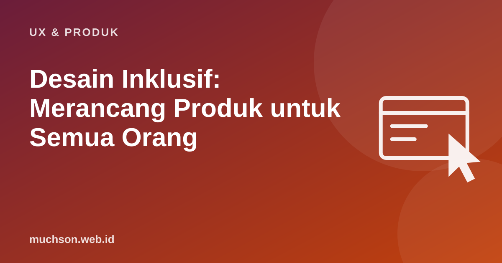

Beranda › Artikel › UX & Produk
UX & ProdukDesain Inklusif: Merancang Produk untuk Semua Orang
Menurut WHO, sekitar 1,3 miliar orang atau 1 dari 6 penduduk dunia mengalami disabilitas yang signifikan. Tetapi desain inklusif bukan hanya tentang disabilitas permanen. Siapa pun bisa mengalami keterbatasan: tangan patah, menggendong bayi, berada di bawah terik matahari, atau memakai koneksi lambat di daerah. Merancang untuk keterbatasan ini membuat produk lebih baik bagi semua orang.

Spektrum persona
Toolkit Inclusive Design dari Microsoft memperkenalkan cara pandang yang membantu: satu kebutuhan bisa muncul secara permanen, sementara, atau situasional.
| Kemampuan | Permanen | Sementara | Situasional |
|---|---|---|---|
| Menyentuh | Satu lengan | Lengan cedera | Menggendong bayi |
| Melihat | Tunanetra | Katarak, mata diperiksa | Silau matahari di layar |
| Mendengar | Tuli | Infeksi telinga | Di kereta yang bising |
| Berbicara | Gangguan bicara | Radang tenggorokan | Aksen berat, tempat sunyi |
Desain untuk satu lengan permanen (misalnya bisa dipakai dengan satu tangan) juga membantu jutaan orang yang sedang menggendong anak atau berpegangan di angkutan umum.
Tiga prinsip Microsoft Inclusive Design
Desain inklusif vs aksesibilitas
Contoh penerapan di produk Indonesia
- Koneksi dan perangkat: aplikasi tetap berguna di ponsel RAM kecil dan jaringan 3G; ada mode hemat data.
- Bahasa: istilah sederhana, hindari jargon dan singkatan Inggris yang tidak perlu.
- Literasi digital: alur yang tidak mengandalkan ikon tanpa label.
- Satu tangan: tombol utama di area jempol.
- Penglihatan: teks bisa diperbesar tanpa merusak tata letak, kontras cukup.
- Pembayaran: pilihan selain kartu kredit, seperti transfer bank, QRIS, dan e-wallet.
- Nama dan identitas: formulir yang menerima nama satu kata, umum di Indonesia.
Banyak formulir menolak pengguna yang hanya memiliki satu nama karena kolom "nama belakang" wajib. Ini contoh pengucilan yang lahir dari asumsi perancangnya.
Tanya jawab
Apakah desain inklusif mahal?
Apakah ada kewajiban hukum di Indonesia?
Bagaimana memulainya di tim kecil?
Sumber dan bacaan lanjut
- Microsoft Inclusive Design
- WHO Fact sheet: Disability
- Desain aksesibel untuk pembelajaran digital WCAG (artikel terkait)